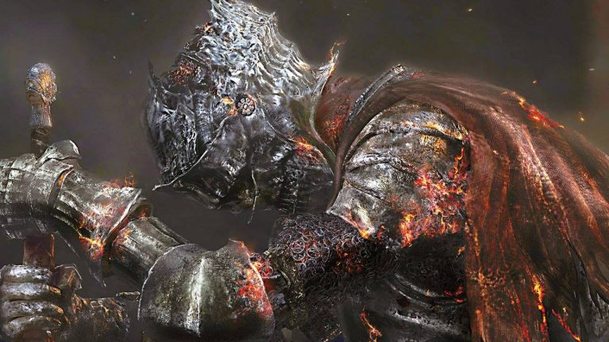

Dark Souls III
Che cosa è Dark Souls?
↓
Dark Souls III è un giochi della sua trilogia sviluppata da FROMSOFTWARE

La sua uscita
Dark Souls III è un videogioco di ruolo d'azione a tema dark fantasy del 2016 sviluppato
da FromSoftware uscito per prima in Giappone, pubblicato da Bandai Namco Entertainment
La Trama
Nel regno di Lothric, il rintocco di una campana segnala che la Prima Fiamma che tiene in vita l'Era del Fuoco si sta estinguendo.
Come già accaduto numerose volte in passato, l'arrivo dell'Era dell'Oscurità provoca la nascita dei non morti, esseri maledetti che sorgono dopo la morte.
L'Era del Fuoco può essere prolungata vincolando la fiamma, un rituale nel quale grandi signori ed eroi sacrificano le proprie anime per alimentare il fuoco ed evitare che si spenga.
Tuttavia il Principe Lothric, il prescelto che si sarebbe dovuto vincolare, ha preferito abbandonare il suo ruolo e lasciare che la fiamma si spegnesse.
Questa campana rappresenta l'ultima speranza per l'Era del Fuoco e ha riportato in vita tutti i precedenti Signori dei Tizzoni (eroi che hanno vincolato la fiamma nelle epoche precedenti) perché siano loro a vincolare, ma tutti hanno rifiutato eccetto uno.
Nel frattempo, uno stregone proveniente dal mondo dipinto di Ariandel, Sulyvahn, si è autoproclamato Gran Sacerdote e ha conquistato Irithyll della Valle Boreale e Anor Londo.

Gameplay
Il gameplay di Dark Souls III riprende a pieno quello dei precedenti capitoli, ampliandolo e rivisitandolo in alcuni punti
Falò
I Falò sono un punto dove il protagonista si può riposare accanto,può viaggiare velocemente in altri falò,ripristinare le statistiche a quelle potenziate togliendo effetti negativi e rigenerare oggetti utilizzati come le fiaschette d'estus,
Se il protagonista si riposa ad uno dei tanti falò le creature abbatute resuscitano e attaccano nuovamente il protagonista
Esistono anche oggetti per tornare al falò rapidamente.
Abilità,Magie e Statistiche
Nel gioco è possibile utilizzare varie abilità che cambiano a seconda dell'arma impugnata e trovare e/o riscsattare magie e armi tramite negozianti grazie alla valuta principale del gioco le anime ricavabili abbattendo creature.
Con le anime è possibile anche aumentare di livello (ogni livello aumenterà il costo e quindi serviranno più anime) ogni livello aumentato ti permette di aumentare una statistica a tuo piacere
Espansioni
Il primo DLC uscito nel 25 ottobre 2016 intitolato Ashes of Ariandel.
Mentre il secondo DLC uscito nel 28 marzo 2017 intitolato The Ringed City
Pagina Ufficiale di Dark Souls